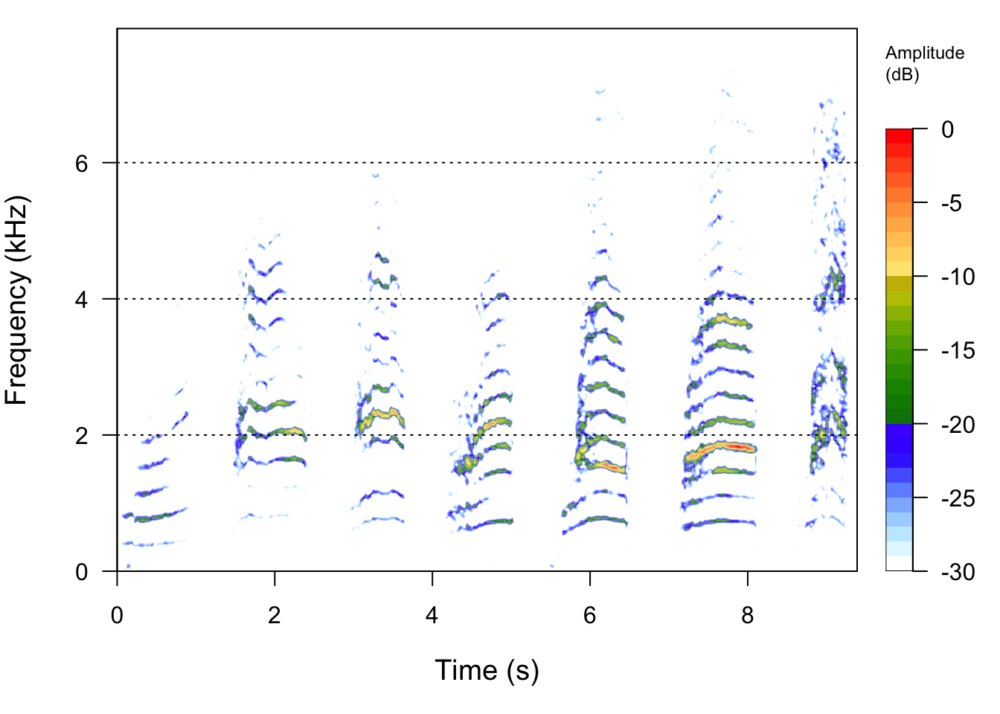
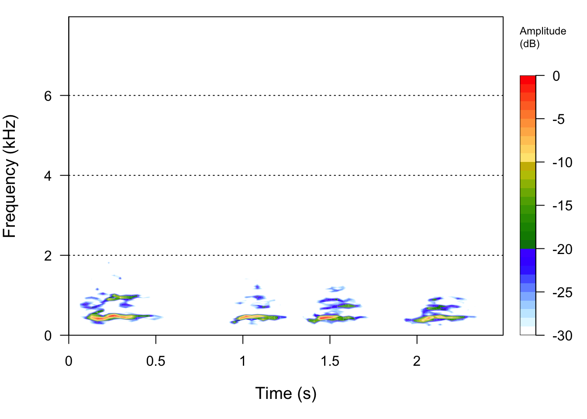
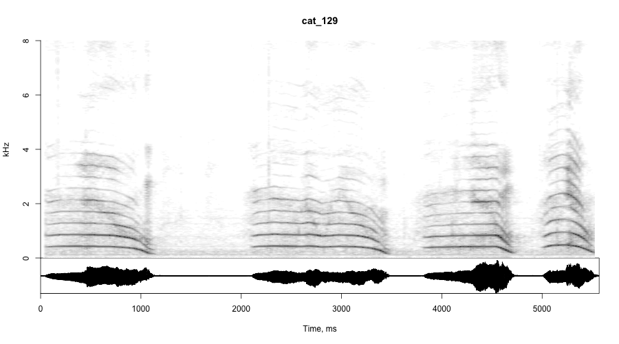
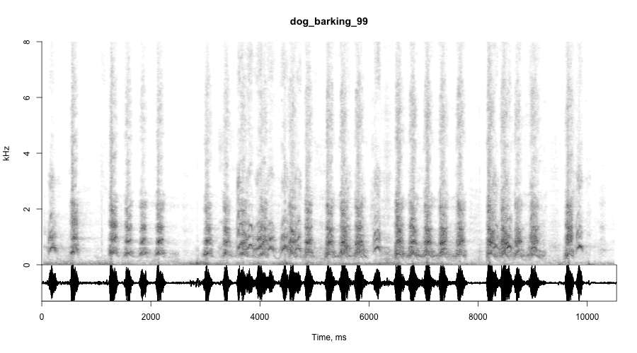

This analysis will use various tools in R to extract data from audio files to do classification. Specifically, predicting whether or not the audio represents a cat meowing or a dog barking. This is meant to serve as a proof of concept, rather than a rigorous ML application.
One way to analyze sound is to visualize the frequencies on a spectrogram. You can then do a series of analysis to extract relevant sound information.
Below we have an example of what a cat and a dog vocalization look like on one of those spectrograms.
Raw data can be found here.


There are two major strategies that you can use when analyzing sound.
Extract relevant audio data from a sound file. This can include things like median frequency and pitch.
You can also take those visualizations of sound on spectrograms and do machine vision on them. Basically, taking the audio data and representing it visually, and then breaking that data up into pixels for classification.
This post will cover both strategies
If you are doing this kind of work, it is likely that you have a folder of sound files. Below you can see one way in which you can reference your different file lists. This for example, sets the pathnames to the training data for both cat and dog vocalizations. After the file paths are set, the analyzeFolder function is used to extract acoustic data from the audio files.
### Read wav files
mydir_cat_train <- "/Users/emily.webber/Dropbox/Website Dropbox 2/Sound2/train/cat"
mydir_dog_train <- "/Users/emily.webber/Dropbox/Website Dropbox 2/Sound2/train/dog"
#### Cat Files
fnam=file.path(mydir_cat_train)
filist=list.files(fnam, recursive=TRUE, pattern="wav")
filist1=paste(fnam, "/", filist, sep="")
nfiles=length(filist1)
wav_analyze_cat_train <- analyzeFolder(mydir_cat_train)
#### Dog Files
fnamDOG=file.path(mydir_dog_train)
filist=list.files(fnam, recursive=TRUE, pattern="wav")
filist1=paste(fnam, "/", filist, sep="")
nfiles=length(filist1)
wav_analyze_dog_train <- analyzeFolder(mydir_dog_train)
After analyzing the cat and dog wav files separately. You simply bind them together to form the training set.
wav_analyze_cat_train$group <- "cat"
wav_analyze_dog_train$group <- "dog"
train_cat_dog <- rbind(wav_analyze_cat_train, wav_analyze_dog_train)
emptycols <- sapply(train_cat_dog, function (k) all(is.na(k)))
train_cat_dog <- train_cat_dog[!emptycols]
train_cat_dog$sound <- as.character(train_cat_dog$sound)
train_groups <- train_cat_dog$sound
train_cat_dog$sound <- NULL
You can use any number of algorithms for modeling data. I chose the “gbm” method from the caret library.
library(caret)
set.seed(825)
gbmFit1 <- train(group ~ ., data = train_cat_dog,
method = "gbm",
verbose = FALSE,
na.action = na.pass)
gbmFit1
Once your model is trained and you are happy with it, the next step is to import the test data.
mydir_cat_test <- "/Users/emily.webber/Dropbox/Website Dropbox 2/Sound2/test/cats"
mydir_dog_test <- "/Users/emily.webber/Dropbox/Website Dropbox 2/Sound2/test/dogs"
#### Cat Files
fnam=file.path(mydir_cat_train)
filist=list.files(fnam, recursive=TRUE, pattern="wav")
filist1=paste(fnam, "/", filist, sep="")
nfiles=length(filist1)
#### Dog Files
fnam=file.path(mydir_dog_test)
filist=list.files(fnam, recursive=TRUE, pattern="wav")
filist1=paste(fnam, "/", filist, sep="")
nfiles=length(filist1)
You analyze and bind the test data in the same way you did the train data.
wav_analyze_cat_test<- analyzeFolder(mydir_cat_test)
wav_analyze_dog_test <- analyzeFolder(mydir_dog_test)### Bind training files together
test_cat_dog <- rbind(wav_analyze_cat_test, wav_analyze_dog_test)
emptycols <- sapply(test_cat_dog, function (k) all(is.na(k)))
test_cat_dog <- test_cat_dog[!emptycols]
test_cat_dog$sound <- as.character(test_cat_dog$sound)
testing_groups <- test_cat_dog$sound
test_cat_dog$sound <- NULL
Now you can input your test dataset into the model that you built to generate predictions! Below you can see the code and summary of the results. You can see that our gbm model did a pretty good job!
### Preditions
pred <- predict(gbmFit1, test_cat_dog)
testing_groups <- as.data.frame(testing_groups)
testing_groups$pred <- pred
testing_groups$actual <- substr(testing_groups$testing_groups, start = 1, stop = 3)
testing_groups$actual <- as.factor(testing_groups$actual)
confusionMatrix(testing_groups$actual, testing_groups$pred)## Confusion Matrix and Statistics
##
## Reference
## Prediction cat dog
## cat 37 2
## dog 4 24
##
## Accuracy : 0.9104
## 95% CI : (0.8152, 0.9664)
## No Information Rate : 0.6119
## P-Value [Acc > NIR] : 3.902e-08
##
## Kappa : 0.8141
##
## Mcnemar's Test P-Value : 0.6831
##
## Sensitivity : 0.9024
## Specificity : 0.9231
## Pos Pred Value : 0.9487
## Neg Pred Value : 0.8571
## Prevalence : 0.6119
## Detection Rate : 0.5522
## Detection Prevalence : 0.5821
## Balanced Accuracy : 0.9128
##
## 'Positive' Class : cat
##
The last section covered how to classify sound using analysis of an audio file with soundgen. This next section will focus on visualizing the sound data on a spectrogram, and then using those images in classification.
In order to get started, you need to create spectrograms for all of your training and test files. Only run this once. I commented out the code so that it would not rerun every time I knit this markdown file.
#spectrogramFolder(mydir_cat_train, htmlPlots = TRUE, verbose = TRUE, step = NULL, overlap = 50, wn = "gaussian",
# zp = 0, ylim = NULL, osc = TRUE, xlab = "Time, ms",
# ylab = "kHz", width = 900, height = 500, units = "px",
# res = NA)
#spectrogramFolder(mydir_dog_train, htmlPlots = TRUE, verbose = TRUE, step = NULL, overlap = 50, wn = "gaussian",
# zp = 0, ylim = NULL, osc = TRUE, xlab = "Time, ms",
# ylab = "kHz", width = 900, height = 500, units = "px",
# res = NA)
#spectrogramFolder(mydir_cat_test, htmlPlots = TRUE, verbose = TRUE, step = NULL, overlap = 50, wn = "gaussian",
# zp = 0, ylim = NULL, osc = TRUE, xlab = "Time, ms",
# ylab = "kHz", width = 900, height = 500, units = "px",
# res = NA)
#spectrogramFolder(mydir_dog_test, htmlPlots = TRUE, verbose = TRUE, step = NULL, overlap = 50, wn = "gaussian",
# zp = 0, ylim = NULL, osc = TRUE, xlab = "Time, ms",
# ylab = "kHz", width = 900, height = 500, units = "px",
# res = NA)
This is similar to the last set-up.
library(pbapply)
library(magick)## Linking to ImageMagick 6.9.9.39
## Enabled features: cairo, fontconfig, freetype, lcms, pango, rsvg, webp
## Disabled features: fftw, ghostscript, x11library(EBImage)##
## Attaching package: 'EBImage'## The following object is masked from 'package:tuneR':
##
## channelwidth <- 28
height <- 28
img_size <- width*height
mydir_test_spec <- "/Users/emily.webber/Dropbox/Website Dropbox 2/Sound2/test/test_specs"
mydir_train_spec <- "/Users/emily.webber/Dropbox/Website Dropbox 2/Sound2/train/train_spec"
This is a function that uses the file paths to process images. Images are read, resized, changed to grayscale and put into a matrix (tabular data) with this function. This is essentially going to take the image files, processes them and extract pixel information. function credit
extract_feature <- function(dir_path, width, height, is_cat = TRUE, add_label = TRUE) {
img_size <- width*height
## List images in path
images_names <- list.files(dir_path)
if (add_label) {
## Select only cats or dogs images
images_names <- images_names[grepl(ifelse(is_cat, "cat", "dog"), images_names)]
## Set label, cat = 0, dog = 1
label <- ifelse(is_cat, 0, 1)
}
print(paste("Start processing", length(images_names), "images"))
## This function will resize an image, turn it into greyscale
feature_list <- pblapply(images_names, function(imgname) {
## Read image
img <- readImage(file.path(dir_path, imgname))
## Resize image
img_resized <- resize(img, w = width, h = height)
## Set to grayscale
grayimg <- channel(img_resized, "gray")
## Get the image as a matrix
img_matrix <- grayimg@.Data
## Coerce to a vector
img_vector <- as.vector(t(img_matrix))
return(img_vector)
})
## bind the list of vector into matrix
feature_matrix <- do.call(rbind, feature_list)
feature_matrix <- as.data.frame(feature_matrix)
## Set names
names(feature_matrix) <- paste0("pixel", c(1:img_size))
if (add_label) {
## Add label
feature_matrix <- cbind(label = label, feature_matrix)
}
return(feature_matrix)
}
The next step is to apply the function to the training and testing datasets.
cats_data <- extract_feature(dir_path = mydir_train_spec, width = width, height = height)## [1] "Start processing 125 images"dogs_data <- extract_feature(dir_path = mydir_train_spec, width = width, height = height, is_cat = FALSE)## [1] "Start processing 85 images"cats_data_test <- extract_feature(dir_path = mydir_test_spec, width = width, height = height)## [1] "Start processing 39 images"dogs_data_test<- extract_feature(dir_path = mydir_test_spec, width = width, height = height, is_cat = FALSE)## [1] "Start processing 28 images"saveRDS(cats_data, "cat.rds")
saveRDS(dogs_data, "dog.rds")
saveRDS(cats_data_test, "cat.rds")
saveRDS(dogs_data_test, "dog.rds")
Cat
knitr::include_graphics("/Users/emily.webber/Dropbox/Website Dropbox 2/Sound2/test/cats_spec/cat_129.png")
Dog
knitr::include_graphics("//Users/emily.webber/Dropbox/Website Dropbox 2/Sound2/test/dogs_spec/dog_barking_99.png")
Bind the cats and dogs data within the training and testing datasets.
## Bind rows in a single dataset
train_set <- rbind(cats_data, dogs_data)
test_set <- rbind(cats_data_test, dogs_data_test)
#write.csv(test_set, file = "test.csv")
#write.csv(train_set, file = "train.csv")
This section fits the same type of model used for the acoustic wav form data.
set.seed(825)
gbmFit_image <- train(label ~ ., data = train_set,
method = "gbm",
verbose = FALSE,
na.action = na.pass)
gbmFit_image## Stochastic Gradient Boosting
##
## 210 samples
## 784 predictors
##
## No pre-processing
## Resampling: Bootstrapped (25 reps)
## Summary of sample sizes: 210, 210, 210, 210, 210, 210, ...
## Resampling results across tuning parameters:
##
## interaction.depth n.trees RMSE Rsquared MAE
## 1 50 0.1742041 0.8767061 0.08694624
## 1 100 0.1773871 0.8706470 0.09359096
## 1 150 0.1791563 0.8680945 0.09860695
## 2 50 0.1763691 0.8715315 0.08528835
## 2 100 0.1781513 0.8685479 0.09245553
## 2 150 0.1786531 0.8675912 0.09538868
## 3 50 0.1755923 0.8717695 0.08440902
## 3 100 0.1766826 0.8701327 0.08899663
## 3 150 0.1770438 0.8695573 0.09190784
##
## Tuning parameter 'shrinkage' was held constant at a value of 0.1
##
## Tuning parameter 'n.minobsinnode' was held constant at a value of 10
## RMSE was used to select the optimal model using the smallest value.
## The final values used for the model were n.trees = 50, interaction.depth
## = 1, shrinkage = 0.1 and n.minobsinnode = 10.
Reserve the label from the test set and save it to another variable.
### Preditions
image_scores <- test_set$label
image_scores2 <- unlist(image_scores)
image_scores2 <-as.data.frame(image_scores2)
test_set$label <- NULL
The final step is to run the model on the test data. The results are then converted to categories using the threshold of 0.5 and compared to the actual labels.
pred_image <- predict(gbmFit_image, test_set)
image_scores2$pred <- pred_image
image_scores2$predicted[image_scores2$pred >= 0.5] <- "cat"
image_scores2$predicted[image_scores2$pred < 0.5] <- "dog"
image_scores2$actual[image_scores2$image_scores2 == '1'] <- "cat"
image_scores2$actual[image_scores2$image_scores2 == '0'] <- "dog"
image_scores2$actual <- as.factor(image_scores2$actual)
image_scores2$predicted <- as.factor(image_scores2$predicted)
confusionMatrix(image_scores2$actual, image_scores2$predicted)## Confusion Matrix and Statistics
##
## Reference
## Prediction cat dog
## cat 28 0
## dog 1 38
##
## Accuracy : 0.9851
## 95% CI : (0.9196, 0.9996)
## No Information Rate : 0.5672
## P-Value [Acc > NIR] : 1.643e-15
##
## Kappa : 0.9695
##
## Mcnemar's Test P-Value : 1
##
## Sensitivity : 0.9655
## Specificity : 1.0000
## Pos Pred Value : 1.0000
## Neg Pred Value : 0.9744
## Prevalence : 0.4328
## Detection Rate : 0.4179
## Detection Prevalence : 0.4179
## Balanced Accuracy : 0.9828
##
## 'Positive' Class : cat
##